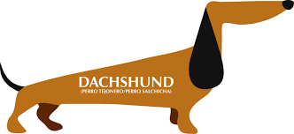

Lomitos
Año con año surgen términos que los más jóvenes utilizan para comunicarse con sus amigos. El caso más reciente es el de GPI y POV, cuyas abreviaturas significan Point of view (Punto de vista en español) y Gracias por invitar, respectivamente.
Sin embargo, una palabra utilizada desde hace mucho tiempo para hacer referencia a los perritos es 'lomitos'. Hoy en día es muy común que la mayoría de las personas se refieran a los peludos con ese apodo.
Lomito 1 Lomito 2 Lomito 3Haz click aqui para ver mas imagenes de lomitos
Haz click aqui para ver mas imagenes de lomitos en otra pestaña

Click en la imagen para ver imagenes de bebes de los lomitos de cada raza
Lista de lomitos
Cosas que aman los lomitos
- Pasear
- Dormir
- Comer
- Galletas con crema de cacahuate
Cosas que odian los lomitos
- Pirotecnia
Dueños degatos- Galletas sin crema de cacahuate
Inicio
200px de Ancho
20vw de Ancho
15em de Ancho